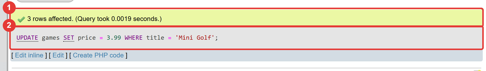
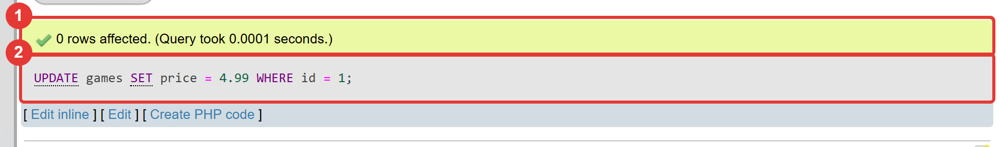

Μάθημα 6: Αλλάζω και σβήνω¶
Βάση δεδομένων και Python: αλλάζω και σβήνω εγγραφές με UPDATE και DELETE, στο phpMyAdmin και από πρόγραμμα, με δίχτυα ασφαλείας
Διάρκεια: 2 κύκλοι × περίπου 45′ εργασία (2 διδακτικές ώρες)
Φύλλο εργασίας
Αυτή η σελίδα εξηγεί τις έννοιες. Οι ασκήσεις και οι οδηγίες για κάθε κύκλο βρίσκονται στο Φύλλο εργασίας 6. Δούλεψε με τις δύο σελίδες ανοιχτές.
Αρχεία εργαστηρίου¶
| Αρχείο | Κύκλος |
|---|---|
| 01-start-state.sql | πριν αρχίσεις |
| 02-update.sql | 1 |
| 03-update-price.py | 1 |
| 04-delete.sql | 2 |
| 05-rollback.py | 2 |
| 06-final.py | 2 |
Η αποστολή¶
Μέχρι τώρα η βάση σου μόνο μεγάλωνε. Σε μια πραγματική εφαρμογή τα δεδομένα αλλάζουν: μια τιμή
διορθώνεται, ένα παιχνίδι βγαίνει σε έκπτωση, μια εγγραφή που μπήκε κατά λάθος (ή τρεις φορές) πρέπει να φύγει.
Σήμερα μαθαίνεις να αλλάζεις (UPDATE) και να σβήνεις (DELETE).
Είναι οι πιο επικίνδυνες εντολές που έχεις δει. Μια SELECT δεν χαλάει τίποτα. Μια λάθος UPDATE ή DELETE
μπορεί να χαλάσει όλον τον πίνακα σε ένα δευτερόλεπτο, χωρίς μήνυμα σφάλματος και χωρίς «Αναίρεση». Γι' αυτό
σήμερα μαθαίνεις και τρία δίχτυα ασφαλείας: τη SELECT πριν από την αλλαγή, το rowcount και το rollback.
Στο τέλος θα έχεις καθαρίσει μια βάση που «λερώθηκε» στις δοκιμές του Μαθήματος 5.
Στο τέλος θα μπορείς¶
- να αλλάζεις τιμές με
UPDATE … SET … WHERE, σε μία ή σε πολλές γραμμές, σε μία ή σε πολλές στήλες, ακόμη και με υπολογισμό (price * 0.9). - να εξηγείς γιατί το
WHEREείναι το φρένο και τι συμβαίνει αν το ξεχάσεις. - να σβήνεις γραμμές με
DELETE FROM … WHERE, και πολλές μαζί μεIN. - να κάνεις πρώτα
SELECTμε το ίδιοWHEREκαι να ελέγχεις ότι το «rows affected» ταιριάζει. - να στέλνεις
UPDATEκαιDELETEαπό την Python με παραμέτρους και να διαβάζεις τοrowcount. - να ακυρώνεις αλλαγές με
rollback()και να εξηγείς τη διαφορά του από τοcommit(). - να ζητάς επιβεβαίωση από τον χρήστη πριν σβήσεις κάτι.
Πριν αρχίσεις¶
- Ξεκίνα τη MySQL και τον Apache από το XAMPP Control Panel.
- Φτιάξε έναν φάκελο
06-update-deleteμέσα στον φάκελο των μαθημάτων και κατέβασε εκεί τα έξι αρχεία του πίνακα. Κράτησε ακριβώς τα ονόματα (.sqlκαι.py). Άνοιξε τον φάκελο στο VS Code και άνοιξε τερματικό. - Φέρε τη βάση στην κατάσταση εκκίνησης: στο phpMyAdmin επίλεξε τη βάση
game_library, άνοιξε την καρτέλα Import, διάλεξε το01-start-state.sqlκαι πάτα Import (όπως στο Μάθημα 1). - Έλεγξε στην καρτέλα Browse ότι ο
gamesέχει 18 γραμμές και οplatforms5. - Τα αρχεία
.sqlτα ανοίγεις σε επεξεργαστή κειμένου, συμπληρώνεις τα κενά και αντιγράφεις κάθε εντολή στην καρτέλα SQL τηςgame_library. Τα αρχεία.pyτα τρέχεις από το τερματικό.
Το αρχείο εκκίνησης σβήνει τα δεδομένα σου
Το 01-start-state.sql σβήνει τους πίνακες games, platforms και players και τους φτιάχνει από την
αρχή. Στο Μάθημα 5 ο καθένας πρόσθεσε διαφορετικά παιχνίδια· με αυτό το αρχείο ξεκινάμε όλοι από τα ίδια
δεδομένα, ώστε να δουλεύουν οι προβλέψεις του φύλλου εργασίας. Μοιάζουν με τα δικά σου: διπλά «Mini Golf»,
τα τρία παιχνίδια του executemany και δύο δοκιμαστικές γραμμές. Σε μια πραγματική βάση δεν θα έτρεχες ποτέ
τέτοιο αρχείο χωρίς αντίγραφο ασφαλείας (θα τα μάθεις στο Μάθημα 18). Στο μάθημα, αν χαλάσεις τα δεδομένα,
το τρέχεις ξανά και ξεκινάς από την αρχή.
Ο κύκλος εργασίας
Πρόβλεψη → εκτέλεση → σύγκριση → εξήγηση. Σήμερα πρόβλεψε πόσες γραμμές θα επηρεαστούν. Το
phpMyAdmin το γράφει μετά από κάθε εντολή (στην UPDATE «3 rows affected», στη DELETE «2 rows deleted») και
το πρόγραμμα Python το δίνει με το rowcount.
Κύκλος 1 — Αλλάζω δεδομένα με UPDATE¶
Σε αυτόν τον κύκλο μαθαίνεις να διορθώνεις δεδομένα. Πρώτα στο phpMyAdmin και μετά από την Python.
1.1 Τα δεδομένα που θέλουν δουλειά¶
Άνοιξε την καρτέλα Browse του games. Ο πίνακας έχει τέσσερα προβλήματα, και τα τέσσερα από τις δοκιμές του
Μαθήματος 5:
| Πρόβλημα | Πού | Πώς θα το λύσουμε |
|---|---|---|
Το «Moto Rush» κοστίζει 124.90 αντί για 12.49 |
games, id 16 |
UPDATE |
| Τρία ίδια «Mini Golf» | games, id 11, 12, 13 |
UPDATE (τιμή) και DELETE (τα διπλά) |
Δύο δοκιμαστικές γραμμές («τεστ» και «asdf») με χρονιά 0 (θυμάσαι ότι το abc έγινε 0;) |
games, id 17, 18 |
DELETE |
Η «Meta Quest» έχει χρονιά 2029 |
platforms, id 5 |
UPDATE από την Python |
1.2 Η εντολή UPDATE¶
Διαβάζεται σαν πρόταση: «Άλλαξε τον πίνακα games: βάλε τιμή 12.49, εκεί όπου το id είναι 16». Έχει
τρία μέρη:
UPDATEκαι το όνομα του πίνακα: τι αλλάζει.SETκαιστήλη = νέα τιμή: με τι αλλάζει.WHERE: ποιες γραμμές αλλάζουν. Είναι το ίδιοWHEREπου έμαθες στο Μάθημα 4.
Το = έχει εδώ δύο ρόλους: στο SET δίνει τιμή, στο WHERE συγκρίνει.
Η UPDATE δεν επιστρέφει πίνακα. Το phpMyAdmin γράφει μόνο πόσες γραμμές επηρεάστηκαν («1 row affected»,
στα ελληνικά «Επηρεάστηκε 1 γραμμή»).
1.3 Πολλές γραμμές, πολλές στήλες, υπολογισμοί¶
Πολλές γραμμές. Αλλάζουν όσες γραμμές ταιριάζουν στο WHERE, όχι μία:

Υπολογισμός. Η νέα τιμή μπορεί να υπολογίζεται από την παλιά τιμή της ίδιας γραμμής. Κάθε γραμμή υπολογίζεται χωριστά:
Η ROUND είναι από το Μάθημα 2. Η τιμή 9.99 γίνεται 8.99 και η 17.99 γίνεται 16.19.
Πολλές στήλες. Τις χωρίζεις με κόμμα:
Κόμμα, όχι AND
Η SET price = 5.99 AND genre = 'Παζλ' δεν δίνει σφάλμα. Η SQL τη διαβάζει ως
price = (5.99 AND genre = 'Παζλ'), δηλαδή «η τιμή είναι το αποτέλεσμα μιας λογικής πρότασης», και βάζει
1.00. Το είδος δεν αλλάζει καθόλου. Είναι σιωπηλό λάθος, όπως το OR του Μαθήματος 4.
1.4 Το WHERE είναι το φρένο¶
Αν ξεχάσεις το WHERE, η UPDATE αλλάζει όλες τις γραμμές:
Δεν υπάρχει σφάλμα, ούτε ερώτηση «είσαι σίγουρος;», ούτε «Αναίρεση». Είναι από τα πιο γνωστά λάθη στις βάσεις δεδομένων. Ο κανόνας που σε προστατεύει:
Πρώτα SELECT, μετά UPDATE
Πριν αλλάξεις, κάνε SELECT με το ίδιο WHERE και δες ποιες γραμμές θα αλλάξουν:
SELECT id, title, price FROM games WHERE genre = 'Αγωνιστικό'; -- ποιες γραμμές;
UPDATE games SET price = ROUND(price * 0.9, 2) WHERE genre = 'Αγωνιστικό'; -- τώρα αλλάζω
Μετά την UPDATE, το πλήθος του «rows affected» πρέπει να ταιριάζει με το πλήθος της SELECT. Αν διαφέρει,
κάτι δεν πήγε όπως το περίμενες.
Το «0 rows affected» δεν είναι σφάλμα
Αν το WHERE δεν ταιριάζει σε καμία γραμμή (π.χ. WHERE id = 99), η βάση δεν διαμαρτύρεται: γράφει
«0 rows affected». Το ίδιο γράφει και όταν η γραμμή βρέθηκε, αλλά η νέα τιμή ήταν ήδη ίδια με την παλιά.
Το «affected» σημαίνει «γραμμές που άλλαξαν».

Στάδιο 1 — UPDATE στο phpMyAdmin¶
Άνοιξε το 02-update.sql. Συμπλήρωσε τα τέσσερα κενά (____) και τρέξε τα ερωτήματα ένα-ένα, με τη σειρά.
Πρώτα πρόβλεψε πόσες γραμμές θα αλλάξει κάθε UPDATE.
-- Στάδιο 1 — Αλλάζω δεδομένα με UPDATE.
--
-- Πριν αρχίσεις: τρέξε το 01-start-state.sql (καρτέλα Import), ώστε ο games να έχει 17 γραμμές.
--
-- Πώς το τρέχεις:
-- 1. Συμπλήρωσε τα κενά (____) σε έναν επεξεργαστή κειμένου.
-- 2. Τρέξε κάθε εντολή ΞΕΧΩΡΙΣΤΑ στην καρτέλα SQL της βάσης game_library.
-- 3. ΠΡΩΤΑ πρόβλεψε πόσες γραμμές θα αλλάξουν. Μετά την UPDATE το phpMyAdmin γράφει «N rows affected».
-- Ερώτημα 1 (έτοιμο): πρώτα ΔΕΣ ποιες γραμμές θα αλλάξει το ερώτημα 4. Η SELECT δεν αλλάζει τίποτα.
SELECT id, title, genre, price
FROM games
WHERE genre = 'Αγωνιστικό';
-- Ερώτημα 2: το «Moto Rush» (id 16) κοστίζει 124.90 αντί για 12.49, λάθος από τη δοκιμή. Διόρθωσέ το.
UPDATE games
SET price = ____
WHERE id = 16;
-- Ερώτημα 3: και τα τρία «Mini Golf» να κοστίζουν 3.99
UPDATE games
SET price = 3.99
WHERE ____ = 'Mini Golf';
-- Ερώτημα 4: έκπτωση 10% στα αγωνιστικά (η νέα τιμή είναι το 90% της παλιάς)
UPDATE games
SET price = ROUND(price * ____, 2)
WHERE genre = 'Αγωνιστικό';
-- Ερώτημα 5: το «Sky Pirates» γίνεται είδος «Δράσης» με τιμή 8.99 (δύο στήλες με μία εντολή)
UPDATE games
SET genre = 'Δράσης'____ price = 8.99
WHERE title = 'Sky Pirates';
-- Ερώτημα 6 (έτοιμο): έλεγξε το αποτέλεσμα όλων των αλλαγών
SELECT id, title, genre, price
FROM games
WHERE id IN (2, 9, 11, 12, 13, 14, 16)
ORDER BY id;
1.5 UPDATE από την Python¶
Στέλνεται όπως το INSERT του Μαθήματος 5: με παραμέτρους και commit.
sql = "UPDATE games SET price = %s WHERE id = %s"
cursor.execute(sql, (price, game_id))
connection.commit()
- Οι τιμές της πλειάδας μπαίνουν με τη σειρά που εμφανίζονται τα
%s: πρώτα η τιμή (τουSET), μετά τοid(τουWHERE). Αν τις αντιστρέψεις, δεν θα δώσει σφάλμα: η βάση θα ψάξει παιχνίδι μεidίσο με την τιμή, δεν θα βρει κανένα, και δεν θα αλλάξει τίποτα. - Ισχύει ο κανόνας του Μαθήματος 5: ό,τι έρχεται από τον χρήστη μπαίνει στη SQL μόνο ως παράμετρος.
- Η
cursor.rowcountδίνει πόσες γραμμές άλλαξαν. Η τιμή0σημαίνει ότι ή δεν υπάρχει τέτοιοid, ή η νέα τιμή ήταν ήδη αυτή. Το πρόγραμμα το λέει στον χρήστη.
Στάδιο 2 — Αλλάζω μια τιμή από την Python¶
Άνοιξε το 03-update-price.py. Συμπλήρωσε τα πέντε κενά και τρέξε το. Άλλαξε την τιμή του παιχνιδιού με id
14 σε 8.50. Μετά έλεγξε την αλλαγή στο phpMyAdmin.
"""Στάδιο 2 — Αλλάζω την τιμή ενός παιχνιδιού από την Python.
Το πρόγραμμα ρωτά το id ενός παιχνιδιού και τη νέα τιμή του, και τη γράφει στη βάση.
Συμπλήρωσε τα πέντε κενά (____).
"""
from decimal import Decimal
import mysql.connector
connection = mysql.connector.connect(host="localhost", user="root", password="", database="game_library")
cursor = connection.cursor()
game_id = int(input("id του παιχνιδιού: "))
price = Decimal(input("Νέα τιμή: "))
# TODO 1: στη θέση της τιμής και του id βάλε σημεία παραμέτρων (χωρίς εισαγωγικά)
sql = "UPDATE games SET price = ____ WHERE id = ____"
# TODO 2: δώσε τις τιμές με τη σειρά που εμφανίζονται τα σημεία στην εντολή: πρώτα η τιμή, μετά το id
cursor.execute(sql, (____, ____))
# TODO 3: κάνε μόνιμη την αλλαγή (μέθοδος της σύνδεσης)
connection.____()
if cursor.rowcount == 0:
print("Δεν άλλαξε καμία γραμμή: ή δεν υπάρχει τέτοιο id ή η τιμή ήταν ήδη αυτή.")
else:
print(f"Η τιμή του παιχνιδιού με id {game_id} έγινε {price} €.")
cursor.close()
connection.close()
Συνέχισε στο Φύλλο εργασίας, Κύκλος 1.
Κύκλος 2 — Σβήνω και ακυρώνω¶
Σε αυτόν τον κύκλο μαθαίνεις να σβήνεις γραμμές, να ακυρώνεις αλλαγές που δεν έγιναν μόνιμες και να ρωτάς τον χρήστη πριν σβήσεις.
2.1 Η εντολή DELETE¶
- Σβήνει ολόκληρες γραμμές, όχι στήλες. Δεν γράφεις
DELETE *(θα πάρεις#1064). Για να αλλάξεις μόνο μια τιμή, κάνειςUPDATE. - Για πολλές γραμμές χρησιμοποιείς τα εργαλεία του
WHERE:WHERE id IN (12, 13). - Μετά το
commitη διαγραφή είναι μόνιμη. Δεν υπάρχει κάδος ανακύκλωσης. - Τα
idδεν ξαναχρησιμοποιούνται: αν σβήσεις τοid18, το επόμενο παιχνίδι θα πάρει 19. (Θυμίσου το πείραμα του Μαθήματος 1 με τοAUTO_INCREMENT.) - Χωρίς
WHERE, σβήνονται όλες οι γραμμές. Ο πίνακας μένει, άδειος.
Προσοχή στο OR
Η DELETE FROM games WHERE id = 18 OR 1; σβήνει όλον τον πίνακα, γιατί το 1 ισχύει πάντα. Είναι η ίδια
παγίδα με το OR του Μαθήματος 4 και με το x' OR '1'='1 του Μαθήματος 5.
Και εδώ ισχύει ο κανόνας: πρώτα SELECT με το ίδιο WHERE, μετά DELETE.
Μετά τη DELETE το phpMyAdmin γράφει «2 rows deleted» (στα ελληνικά «Διαγράφτηκαν 2 γραμμές»). Πριν την εκτελέσει,
ρωτά με ένα παράθυρο: «Do you really want to execute "DELETE FROM …"?» (στα ελληνικά «Θέλετε να εκτελέσετε το
ακόλουθο…»). Διάβασε την εντολή, έλεγξε το WHERE και μόνο τότε πάτα OK. Αυτό είναι δίχτυ ασφαλείας του
phpMyAdmin. Το δικό σου πρόγραμμα πρέπει να φτιάξει το δικό του (ενότητα 2.4).
Στάδιο 3 — DELETE στο phpMyAdmin¶
Άνοιξε το 04-delete.sql. Συμπλήρωσε τα τρία κενά και τρέξε τα ερωτήματα ένα-ένα. Πρόβλεψε πρώτα πόσες γραμμές
θα σβηστούν.
-- Στάδιο 3 — Σβήνω γραμμές με DELETE.
--
-- Πώς το τρέχεις:
-- 1. Συμπλήρωσε τα κενά (____) σε έναν επεξεργαστή κειμένου.
-- 2. Τρέξε κάθε εντολή ΞΕΧΩΡΙΣΤΑ στην καρτέλα SQL της βάσης game_library.
-- 3. ΠΡΩΤΑ πρόβλεψε πόσες γραμμές θα σβηστούν. Μετά την DELETE το phpMyAdmin γράφει «N rows deleted».
-- 4. Η DELETE δεν έχει «Αναίρεση». Πριν από κάθε DELETE κάνε SELECT με το ίδιο WHERE. Το phpMyAdmin θα ρωτήσει
-- «Do you really want to execute…?»: διάβασε την εντολή και πάτα OK.
-- Ερώτημα 1 (έτοιμο): ΔΕΣ πρώτα τη γραμμή που θα σβήσεις: το δοκιμαστικό παιχνίδι με id 17
SELECT *
FROM games
WHERE id = 17;
-- Ερώτημα 2: σβήσε το δοκιμαστικό παιχνίδι
DELETE FROM games
WHERE id = ____;
-- Ερώτημα 3 (έτοιμο): ποια id έχουν τα τρία «Mini Golf»;
SELECT id, title
FROM games
WHERE title = 'Mini Golf';
-- Ερώτημα 4: κράτα το πρώτο (id 11) και σβήσε τα άλλα δύο με ΜΙΑ εντολή
DELETE FROM games
WHERE id ____ (12, 13);
-- Ερώτημα 5: πόσα παιχνίδια έμειναν στον πίνακα;
SELECT ____(*)
FROM games;
-- Ερώτημα 6 (έτοιμο): η ίδια DELETE του ερωτήματος 2, ξανά. Ποιο είναι το αποτέλεσμα;
DELETE FROM games
WHERE id = 17;
2.2 Το rowcount ως δίχτυ ασφαλείας¶
Μετά από μια DELETE, η cursor.rowcount δίνει πόσες γραμμές σβήστηκαν. Εσύ ξέρεις πόσες περίμενες: αν
σβήνεις με id, περιμένεις ακριβώς μία. Αν η rowcount είναι άλλη, κάτι πήγε στραβά, και πρέπει να μπορείς να
γυρίσεις πίσω πριν γίνει μόνιμο.
2.3 rollback(): ακυρώνω αλλαγές¶
Από το Μάθημα 5 ξέρεις ότι οι αλλαγές μιας σύνδεσης μένουν σε μια συναλλαγή (transaction) ώσπου να τις επιβεβαιώσεις. Έχεις δύο επιλογές:
| Εντολή | Τι κάνει |
|---|---|
connection.commit() |
κάνει μόνιμες όλες τις αλλαγές από το προηγούμενο commit |
connection.rollback() |
ακυρώνει όλες τις αλλαγές από το προηγούμενο commit |
Έτσι γράφεις ένα ασφαλές DELETE: το στέλνεις, ελέγχεις το αποτέλεσμα, και μόνο μετά αποφασίζεις:
cursor.execute("DELETE FROM games WHERE id = %s", (game_id,))
if cursor.rowcount == 1: # σβήστηκε ό,τι περιμέναμε
connection.commit()
else: # κάτι δεν πάει καλά
connection.rollback()
Δύο πράγματα που πρέπει να ξέρεις για τις συναλλαγές:
- Βλέπεις τις αλλαγές σου, οι άλλοι όχι. Μετά από μια
DELETE, η δική σου σύνδεση βλέπει τον πίνακα χωρίς τις γραμμές. Όλοι οι άλλοι (και το phpMyAdmin) βλέπουν ακόμη τα παλιά δεδομένα, ώσπου να γίνειcommit. Στο Στάδιο 4 θα το δεις μόνος σου. - Οι γραμμές κλειδώνουν. Όσο η συναλλαγή είναι ανοιχτή, η βάση κλειδώνει τις γραμμές που άλλαξες. Αν
προσπαθήσεις να τις αλλάξεις από το phpMyAdmin, θα περιμένει περίπου 50 δευτερόλεπτα και μετά θα δώσει
#1205 Lock wait timeout exceeded. Γι' αυτό στο Στάδιο 4 μόνο κοιτάς, δεν αλλάζεις τίποτα.
Αν το πρόγραμμα κλείσει τη σύνδεση χωρίς commit, η MySQL κάνει αυτόματα rollback (το είδες στο Μάθημα 5).
Το ρητό rollback() χρειάζεται όταν το πρόγραμμα συνεχίζει να δουλεύει με την ίδια σύνδεση.
Στάδιο 4 — Η DELETE χωρίς WHERE, με δίχτυ ασφαλείας¶
Άνοιξε το 05-rollback.py. Συμπλήρωσε τα δύο κενά και πρόβλεψε πριν το τρέξεις. Το πρόγραμμα σβήνει όλες
τις γραμμές, αλλά δεν έχει commit πουθενά, οπότε δεν θα σβήσει τίποτα μόνιμα. Όταν σταματήσει και σου ζητήσει
Enter, δες το phpMyAdmin και μετά πάτα Enter.
"""Στάδιο 4 — Η DELETE χωρίς WHERE και το δίχτυ ασφαλείας του rollback.
Το πρόγραμμα σβήνει ΟΛΕΣ τις γραμμές του games, βλέπει τι έγινε, και τις ξαναφέρνει με rollback.
Δεν έχει commit πουθενά, άρα δεν θα σβήσει τίποτα μόνιμα. ΜΗΝ προσθέσεις commit.
Συμπλήρωσε τα δύο κενά (____).
"""
import mysql.connector
connection = mysql.connector.connect(host="localhost", user="root", password="", database="game_library")
cursor = connection.cursor()
def count_games(cursor):
"""Επιστρέφει πόσα παιχνίδια έχει ο πίνακας games, όπως τα βλέπει αυτή η σύνδεση."""
cursor.execute("SELECT COUNT(*) FROM games")
return cursor.fetchone()[0]
print("Πριν από τη DELETE:", count_games(cursor), "παιχνίδια")
cursor.execute("DELETE FROM games") # ΧΩΡΙΣ WHERE: αφορά ΟΛΕΣ τις γραμμές!
# TODO 1: πόσες γραμμές επηρέασε η DELETE; (ιδιότητα του κέρσορα)
print("Η DELETE επηρέασε", cursor.____, "γραμμές")
print("Η σύνδεσή μου βλέπει τώρα:", count_games(cursor), "παιχνίδια")
print()
input("Άνοιξε το phpMyAdmin, δες τον games (Browse) και ΜΗΝ αλλάξεις τίποτα. Μετά πάτα Enter. ")
# TODO 2: ακύρωσε την DELETE (μέθοδος της σύνδεσης)
connection.____()
print("Μετά το rollback:", count_games(cursor), "παιχνίδια")
cursor.close()
connection.close()
Μη βάλεις commit
Αυτό το πρόγραμμα σβήνει όλον τον πίνακα προσωρινά. Αν προσθέσεις connection.commit(), θα σβηστεί
για πάντα. Αν το κάνεις κατά λάθος, τρέξε ξανά το 01-start-state.sql.
2.4 Επιβεβαίωση από τον χρήστη¶
Ένα πρόγραμμα που σβήνει δεν πρέπει να το κάνει με μία πληκτρολόγηση. Πρώτα δείχνει τι θα σβηστεί και ρωτά:
cursor.execute("SELECT title FROM games WHERE id = %s", (game_id,))
row = cursor.fetchone() # πλειάδα με τη γραμμή, ή None αν δεν βρέθηκε
if row is None:
print("Δεν υπάρχει παιχνίδι με αυτό το id.")
else:
answer = input(f"Να σβηστεί το «{row[0]}»; (ναι/όχι): ")
if answer == "ναι":
... # DELETE, έλεγχος του rowcount, commit ή rollback
- Η
fetchone()δίνει μία γραμμή ως πλειάδα, ήNoneόταν δεν υπάρχει γραμμή. Ο τίτλος είναι τοrow[0]. - Σβήνει μόνο το ακριβές «ναι». Οτιδήποτε άλλο (ακόμη και «Ναι» ή «nai») ακυρώνει. Είναι η ασφαλής προεπιλογή: ένα λάθος πληκτρολόγησης δεν σβήνει τίποτα.
- Έχεις πια τρία δίχτυα μαζί: επιβεβαίωση πριν,
rowcountμετά τηDELETEκαιrollbackαν το αποτέλεσμα δεν είναι το αναμενόμενο. (Σε εφαρμογή με πολλούς χρήστες, μεταξύ τηςSELECTκαι τηςDELETEκάποιος άλλος μπορεί να έχει ήδη σβήσει τη γραμμή.)
Στάδιο 5 — Σβήνω με επιβεβαίωση¶
Άνοιξε το 06-final.py. Συμπλήρωσε τα τέσσερα κενά και τρέξε το πολλές φορές, με διαφορετικές εισόδους (δες το
φύλλο εργασίας). Στο τέλος σβήσε με αυτό τη δοκιμαστική γραμμή asdf.
"""Στάδιο 5 — Σβήνω ένα παιχνίδι με επιβεβαίωση.
Το πρόγραμμα εμφανίζει τα παιχνίδια, ρωτά ποιο id θα σβηστεί, δείχνει τον τίτλο και ζητά επιβεβαίωση. Σβήνει
μόνο αν ο χρήστης γράψει ακριβώς «ναι» και η DELETE επηρεάσει ακριβώς μία γραμμή. Στο τέλος εμφανίζει ξανά τα
παιχνίδια.
Συμπλήρωσε τα τέσσερα κενά (____).
"""
import mysql.connector
HOST = "localhost"
USER = "root"
PASSWORD = ""
DATABASE = "game_library"
LIST_SQL = "SELECT id, title, genre, release_year, price FROM games ORDER BY id"
def show(cursor, title, sql):
"""Στέλνει το ερώτημα sql και εμφανίζει το αποτέλεσμα κάτω από τον τίτλο title."""
cursor.execute(sql)
rows = cursor.fetchall()
print()
print(title)
print("-" * len(title))
print(" | ".join(cursor.column_names))
for row in rows:
texts = []
for value in row:
texts.append(str(value))
print(" | ".join(texts))
print(f"Γραμμές: {len(rows)}")
connection = mysql.connector.connect(host=HOST, user=USER, password=PASSWORD, database=DATABASE)
cursor = connection.cursor()
show(cursor, "Όλα τα παιχνίδια", LIST_SQL)
print()
game_id = int(input("id παιχνιδιού που θα σβηστεί (0 για έξοδο): "))
if game_id != 0:
cursor.execute("SELECT title FROM games WHERE id = %s", (game_id,))
row = cursor.fetchone()
# TODO 1: το fetchone() δίνει None όταν δεν βρέθηκε γραμμή
if row is ____:
print("Δεν υπάρχει παιχνίδι με αυτό το id.")
else:
answer = input(f"Να σβηστεί το «{row[0]}»; (ναι/όχι): ")
if answer == "ναι":
# TODO 2: η παράμετρος της DELETE είναι το id που έδωσε ο χρήστης (πλειάδα με μία τιμή)
cursor.execute("DELETE FROM games WHERE id = %s", (____,))
if cursor.rowcount == 1:
# TODO 3: σβήστηκε ακριβώς μία γραμμή, όπως περιμέναμε: κάνε το μόνιμο
connection.____()
print("Το παιχνίδι σβήστηκε.")
else:
# TODO 4: κάτι δεν πήγε όπως περιμέναμε: ακύρωσε την αλλαγή
connection.____()
print("Κάτι πήγε στραβά. Δεν άλλαξε τίποτα.")
else:
print("Ακυρώθηκε. Δεν σβήστηκε τίποτα.")
show(cursor, "Όλα τα παιχνίδια", LIST_SQL)
cursor.close()
connection.close()
Συνέχισε στο Φύλλο εργασίας, Κύκλος 2.
Έλεγχος πριν ολοκληρώσεις¶
- □ Τα Στάδια 1 και 3 έτρεξαν και το «rows affected» ταίριαζε με τις προβλέψεις σου.
- □ Έκανες
SELECTμε το ίδιοWHEREπριν από κάθεUPDATEκαιDELETE. - □ Στο Στάδιο 4 είδες ότι η σύνδεση του προγράμματος και το phpMyAdmin έδειχναν διαφορετικά πράγματα πριν
το
rollback. - □ Ξέρεις τι κάνει το
rollbackκαι ποιο ήταν το αποτέλεσμα όταν το αφαίρεσες από το πρόγραμμα. - □ Το Στάδιο 5 σβήνει μόνο όταν γράψεις ακριβώς «ναι».
- □ Όταν τελείωσες, σταμάτησες τον Apache και τη MySQL.
Για να θυμάσαι¶
UPDATE πίνακας SET στήλη = τιμή [, στήλη = τιμή] WHERE συνθήκη;Πολλές στήλες με κόμμα, όχι μεAND.DELETE FROM πίνακας WHERE συνθήκη;Σβήνει ολόκληρες γραμμές.- Χωρίς
WHERE, επηρεάζονται όλες οι γραμμές. Πάντα πρώταSELECTμε το ίδιοWHERE. - Το «rows affected» και το «rows deleted» (στο phpMyAdmin) και το
cursor.rowcount(στην Python) δίνουν πόσες γραμμές άλλαξαν ή σβήστηκαν. Το0δεν είναι σφάλμα: δεν βρέθηκε γραμμή, ή (στηνUPDATE) η τιμή ήταν ήδη ίδια. - Στις παραμέτρους, οι τιμές μπαίνουν με τη σειρά των
%s. Ο κανόνας του Μαθήματος 5 ισχύει πάντα. connection.commit()κάνει τις αλλαγές μόνιμες.connection.rollback()τις ακυρώνει.- Μέχρι το
commit, μόνο η δική σου σύνδεση βλέπει τις αλλαγές σου, και οι γραμμές είναι κλειδωμένες για τους άλλους. - Πριν σβήσεις από πρόγραμμα: δείξε τι θα σβηστεί, ρώτα, έλεγξε το
rowcount. - Τα
idπου σβήστηκαν δεν ξαναχρησιμοποιούνται.
Λεξιλόγιο¶
UPDATE, SET, DELETE, WHERE, rows affected, rowcount, rollback,
commit, συναλλαγή (transaction), κλείδωμα (lock), fetchone, None, επιβεβαίωση.
Δική σου εκδοχή¶
Αν τελειώσεις νωρίτερα, δούλεψε με μία αλλαγή τη φορά και δοκίμαζε μετά από κάθε αλλαγή:
- Στο
03-update-price.pyκάνεSELECTπριν από τηνUPDATEκαι πρόσθεσε μήνυμα που ξεχωρίζει τις δύο περιπτώσεις τουrowcount == 0(«δεν υπάρχει τέτοιο id» και «η τιμή ήταν ήδη αυτή»). - Στο
08-discount.py(άσκηση «Γράψε εσύ» του Κύκλου 2) μην ρωτάς για επιβεβαίωση αν ηrowcountείναι0. - Στο
06-final.pyπρόσθεσε στο τέλος μια γραμμή που δείχνει πόσα παιχνίδια έμειναν. - Πρόκληση 1: η
DELETE FROM games WHERE id = 18 OR 1;σβήνει όλον τον πίνακα. Στείλ' την από την Python χωρίςcommit, εμφάνισε τοrowcountκαι κάνεrollback. Πρόβλεψε πρώτα τοrowcount. - Πρόκληση 2: το «Ναι» με κεφαλαίο «Ν» δεν σβήνει στο
06-final.py. Άλλαξε τον έλεγχο ώστε να δέχεται και «Ναι» και «ΝΑΙ» (υπόδειξη: η μέθοδοςlower()των κειμένων). Μετά σκέψου: γιατί είναι ασφαλέστερο να ακυρώνει ό,τι δεν είναι «ναι» παρά να σβήνει ό,τι δεν είναι «όχι»;